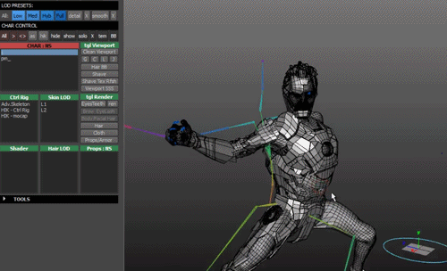

In this area, 3D-visualization is used mainly for the design of technical products. Mordern technology allows you to create a visualization of the projected object, as close to a real device as possible, to evalutate it visually. The three-dimensional model of the future mechanism accelerates and facilities the work of the design engineer.
You can mostly use this in producing cartoons with 3D Models but to get them to move is with, the power of MOTION CAPTURE!! I think Motion Capture is pretty good because it allows you to capture any movement with a specific amount of equipment. You can see this demonstrated with the company Rooster Teeth. They use motion capture in there hit series RWBY. To capture little movement and record fight scenes.
